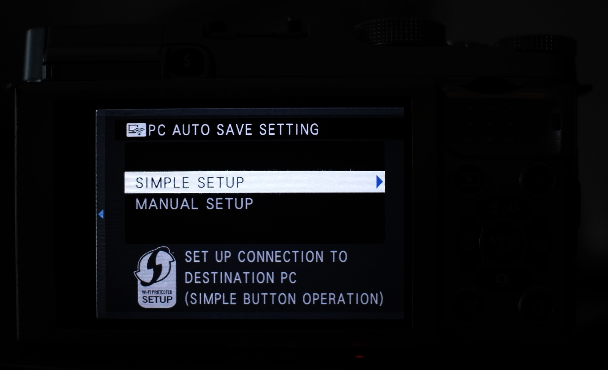

Older cameras will have these options:
When you press a connection mode, you will get a screen like this: 
If you are connecting for the first time, press (OK) CHANGE. Otherwise your camera will reject connections from new clients.
You can setup PC AutoSave from:

SIMPLE SETUP: Press the WPS button on your router for 3 seconds and wait until your camera confirms a connection.
MANUAL SETUP: Select your WiFi network and punch in password on the camera.